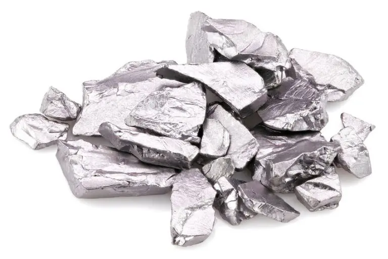

Tantalum (Ta)
- Element Name:
- Tantalum (Ta)
- Atomic Number:
- 73
- Atomic Mass:
- 180.95
- Isotopes:
- 2 (Tantalum-180m and Tantalum-181)
- Melting Temperature:
- 3017 °C
- Boiling Temperature:
- 5458 °C
- Density:
- 16.69 g/cm³
- Electronegativity:
- 1.5 (Pauling scale)
- Year of Discovery:
- 1802 (Anders Ekeberg)
- Abundance:
- Very rare, mainly found in tantalite and columbite minerals
- Characteristics:
- Highly corrosion-resistant, ductile, and highly conductive metal
- Technological Applications:
- Used in electronic capacitors, surgical tools, special alloys, nuclear reactors
- Deposit Locations:
- Australia, Brazil, Canada, Democratic Republic of the Congo
- Health Effects:
- Generally non-toxic, biocompatible, and used in medical implants
- Environmental Impact:
- Mining can cause environmental issues, especially in conflict zones
